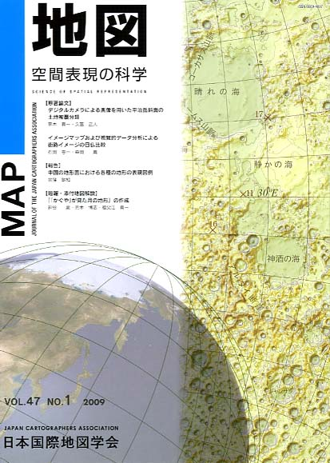
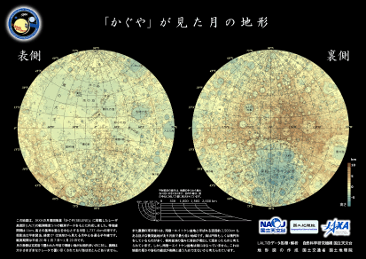

| 最 新 号 | バックナンバー | 添付地図目録 | 投 稿 規 程 |
Vol.47 No.1 （通巻１８５号） ２００９年
| 【原著論文】 | デジタルカメラによる画像を用いた平治岳斜面の土地被覆分類 | 黒木貴一・久冨正人 |
| キーワード：デジタルカメラ、土地被覆分類、ＧＩＳ、平治岳 | ||
| イメージマップおよび視覚的データ分析による街路イメージの日仏比較 | 石田恵一・森田 喬 | |
| キーワード：イメージマップ、視覚的分析、行列図、街路、フランス | ||
| 【報告】 | 中国の地形図における各種の地形の表現図例 | 金窪敏知 |
| キーワード：中国の地形図、地形表現 | ||
| 【短報・添付地図解説】 | 『「かぐや」が見た月の地形』の作成 | 神谷 泉・荒木博志・祖父江真一 |
| 【特別会員のページ】 | 国土地図株式会社 | |
| 玉野総合コンサルタント株式会社 | ||
| 【学会記事】 | ||
| 【添付地図】 | 「かぐや」が見た月の地形 | |
|
≪No.47 No.1 表紙≫ |
|
|  |
|
|
|
≪No.47 No.1 添付地図≫ |
| 
本図を許可なく複製・利用することを禁止します。
|